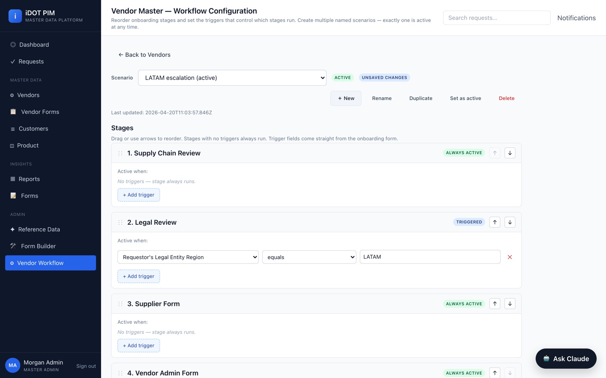
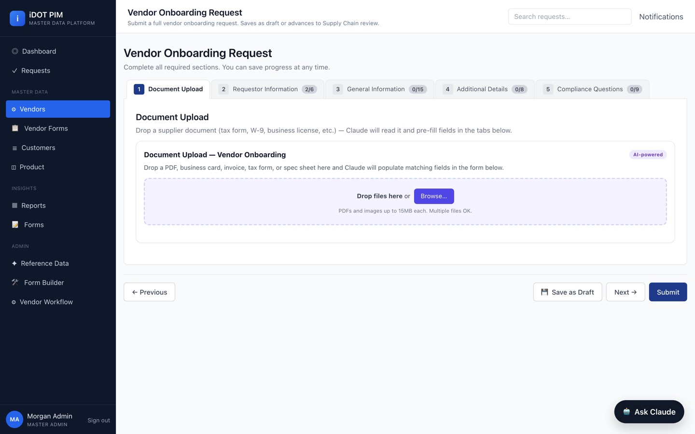
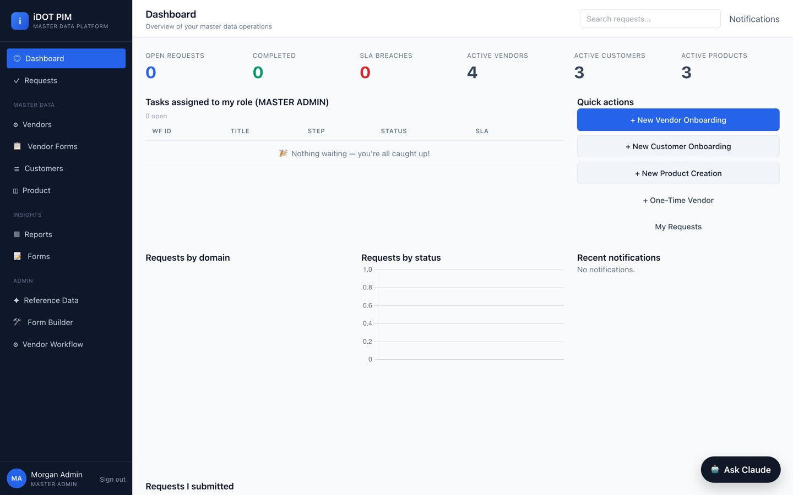

No. 01Enterprise master data
iDOT PIM
An AI-assisted master data platform with enterprise-grade approval workflows, compliance routing, and segregation of duties.
iDOT manages the three core enterprise master-data domains — vendor, customer, and product — from first request to approved record. Every change runs through a configurable approval workflow with SLA tracking, audit timelines, and compliance branches for LATAM, EU, SOX, and GxP rules. It is the exact discipline I design for Fortune 500 clients, implemented as working software.
- Context-aware workflow engine inserts approval steps at runtime: corporate security review for LATAM vendors, finance sign-off for the EU, supervisor review whenever SOX-sensitive fields like bank accounts are touched.
- Segregation of duties enforced in code — no one can approve their own request, including the master-data team itself.
- Claude-powered document AI: upload a W-9 or VAT certificate and the onboarding form fills itself, with an "AI-populated" badge on every field for the audit trail.
- Weighted fuzzy matching across name, tax ID, DUNS, and address stops duplicate vendors before they are ever created.
- Roughly 21,700 lines of code — 109 routes, 27 database tables, 13 demo roles — built in ten days.


